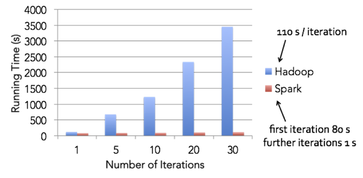

Introduction to Apache Spark
1. Distributed computing and Big Data
MapReduce's wordcount example

MapReduce's workflow

Hadoop Architecture

Iteration speed comparison
Logistic regression speed comparison

Spark stack

Bonus
Wonder what a datacenter looks like?